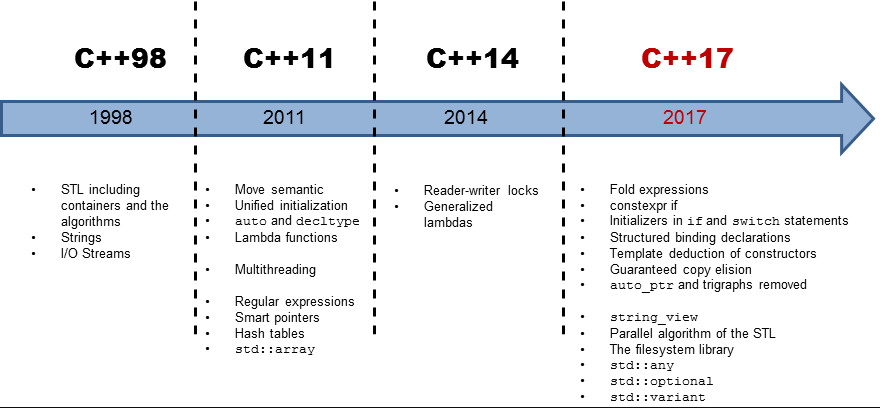
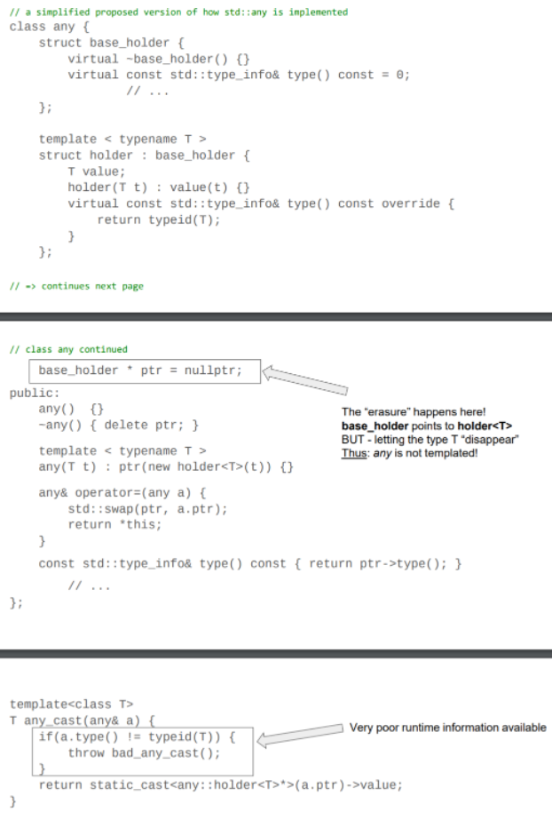
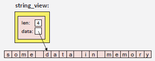

std::optional<>std::variant<>
std::any
std::bytestd::string_viewstd::to_chars() and std::from_chars()
https://wg21.link/p0144r0, https://wg21.link/p0217r3.
Structured bindings allow you to initialize multiple entities with the elements or members of an object.
structured bindings can be used for structures with:
std::pair<>, std::tuple<>, and std::array<> are examples of typesstruct MyStruct {
int i = 0;
std::string s;
};
// the names u and v are what are called structured bindings. They *decompose* the objects passed for initialization
auto [u, v] = ms;
auto [u2, v2] {ms};
auto [u3, v3] (ms);
They can be used to receive return structure's data members.
MyStruct getStruct() { return MyStruct{42, "hello"}; }
auto [id,val] = getStruct(); // id and val name i and s of returned struct
map::insert()).std::map<std::string, int> coll;
auto [pos,ok] = coll.insert({"new",42});
if (!ok) {
// if insertion failed, handle error using iterator pos:
}
They can simplify the iteration loop of std::map<>
for (const auto& [key,val] : mymap) {
std::cout << key << ": " << val << '\n';
}
You can use a very short name such as '_' to skip a data member.
auto [_,val1] = getStruct(); // OK
auto [_,val2] = getStruct(); // ERROR: name _ already used
implementation
A hidden anonymous variable is created, The new names introduced as structured bindings refer to members/elements of this anonymous variable.
// auto [u,v] = ms; is conceptually below, with a new local copy "e".
// e's scope is the same as the structured bindings.
// unless references are used, modifying the value used for initialization has no effect on the names initialized by a structured binding.
auto e = ms;
aliasname u = e.i;
aliasname v = e.s;
Using qualifiers
We can use qualifiers, such as const and references. Again, these qualifiers apply to the anonymous entity
e as a whole.
// Here, the anonymous entity is declared as a const reference
// u and v are the names of the members i and s of the initialized const reference to ms.
// The reference type *only* applies to anonymous entity, decltype(u) is const int and decltype(v) is const std::string
const auto& [u,v] = ms;
// If the value used to initialize a structured bindings reference is a temporary object,
// as usual, the lifetime of the temporary is extended to the lifetime of the bound structure:
MyStruct getStruct();
...
const auto& [a,b] = getStruct();
std::cout << "a: " << a << '\n'; // OK
move semantics
MyStruct ms = { 42, "Jim" };
auto [v,n] = std::move(ms); // new anonymous entity with moved-from values from ms, ms lost its value now.
MyStruct ms = { 42, "Jim" };
auto&& [v,n] = std::move(ms); // anonymous entity is rvalue reference to ms, ms still holds its value at this point.
vs. std::tie
The std::tie is a library hack for a missing language feature of multiple return values. And it has some drawbacks:
One usage is if you have existing variable names, and you want to assign them new values, you can use std::tie()
std::boyer_moore_searcher bmsearch{sub.begin(), sub.end()};
for (auto [beg, end] = bmsearch(text.begin(), text.end());
beg != text.end();
std::tie(beg,end) = bmsearch(end, text.end())) // "beg", "end" are reassigned new values in each loop iteration, and we use std::tie to reuse the existing varaible names.
{}
Providing a Tuple-Like API for Structured Bindings
You can add support for structured bindings to any type by providing a tuple-like API
std::tuple_size<your_type>::value has to return the number of elements.std::tuple_element<idx, your_type>::type has to return the type of the idxth element.
decltype yields for the structured bindings.get<idx>() has to yield the value of the idxth element.
get<>() function will be calledclass Customer {
private:
std::string first;
std::string last;
long val;
//... omit getters are constructors, etc...
};
// provide a tuple-like API for class Customer for structured bindings:
// a specialization of std::tuple_size for type Customer:
template<>
struct std::tuple_size<Customer> {
static constexpr int value = 3; // we have 3 attributes
};
// The type of the third attribute is long, specified as a full specialization for index 2.
template<>
struct std::tuple_element<2, Customer> {
using type = long; // last attribute is a long
};
// The other attributes have type std::string specified as a partial specialization (which has a lower priority than the full specialization).
template<std::size_t Idx>
struct std::tuple_element<Idx, Customer> {
using type = std::string; // the other attributes are strings
};
// define the corresponding getters as overloads of a function get<>() in the same namespace as type Customer:
// Note that all full specializations of function templates have to use the same signature (including the exact same return type).
template<std::size_t> auto get(const Customer& c);
template<> auto get<0>(const Customer& c) { return c.getFirst(); }
template<> auto get<1>(const Customer& c) { return c.getLast(); }
template<> auto get<2>(const Customer& c) { return c.getValue(); }
The if and switch control structures now allow us to specify an initialization clause before the usual
condition or selection clause. The variable's scope is the whole if statement (including the optional else part). The destructor of variable is called after whole if statement.
if (std::ofstream strm = getLogStrm(); coll.empty()) {
strm << "<no data>\n";
}
else {
for (const auto& elem : coll) {
strm << elem << '\n';
}
}
// You can have multiple declarations with optional initializations:
if (auto x = qqq1(), y = qqq2(); x != y) {
std::cout << "return values " << x << " and " << y << " differ\n";
}
// can be used as lock RAII too
// IMPORTANT: always gives a name to the lock guard, otherwise, it will be destroyed immediately without locking the scope.
if (std::lock_guard<std::mutex> lk(mx_); v.empty()) {
v.push_back(kInitialValue);
}
// or, a bit simplifed
if (std::lock_guard _(mx_); v.empty()) { // with C++17 Class Template Argument Deduction (CTAD)
v.push_back(kInitialValue);
}
// another example:
std::map<std::string, int> coll;
if (auto [pos,ok] = coll.insert({"new",42}); !ok) {
// if insert failed, handle error using iterator pos:
const auto& [key,val] = *pos;
std::cout << "already there: " << key << '\n';
}
https://wg21.link/n4424, https://wg21.link/p0386r2.
According to the one definition rule (ODR), a variable or function has to be defined in exactly one translation unit.
workarounds:
struct WithStaticDataMember {
// This is a definition, no out-of-line definition is required.
inline static const char *kFoo = "foo bar";
};
template<typename T> struct X {
// This does not require an out-of-line definition either.
inline static int x;
};
constexpr now implies inline for static members
struct D {
static constexpr int n = 5; // C++11/C++14: declaration
// since C++17: definition
};
// Note, in C++11/14, above is good enough if D::n is passed by value (ie., no definition needed), but will result a linker error if it is passed by reference, or you create a pointer to it.
// out-of-line definition
constexpr int D::n; // C++11/C++14: definition
// since C++17: redundant declaration (deprecated)
Since we can't do constexpr std::string, we have to explicitly use inline if we don't want to define out-of-line.
struct D {
inline static std::string int s = "hello"; // since C++17
};
However, this has a performance cost, compiler will generate an access guard when accessing this static varaible, while out-of-line definition doesn't have this access guard. See this video for detail.
Since C++17, aggregates can have base classes, which means list initialization can be used for them, with below restrictions:
struct Data {
const char* name;
double value;
};
struct CppData : Data {
bool critical;
};
CppData x{{"test1", 6.778}, false}; // OK since C++17
CppData x{"test1", 6.778, false}; // also OK since C++17
CppData x1{}; // zero-initialize all elements
CppData x2{{"msg"}}; // same as {{"msg",0.0},false}
CppData x3{{}, true}; // same as {{nullptr,0.0},true}
CppData x4; // values of fundamental types are unspecified
Backward Incompatibilities:
Derived d1{}; called the implicitly defined default constructor of Derived, which by default called the default constructor of the base class Base, which is okay becuase Derived is a freind class.Derived in below example is an aggregate, with no implicit default constructor at all. You can not use brace initialization because the base class has a private constructor. Whether the base class is a friend is irrelevant.struct Derived;
struct Base {
friend struct Derived;
private:
Base() {}
};
struct Derived : Base
{};
Derived d1{}; // OK in C++14, ERROR since C++17
Derived d2; // still OK (but not initialized)
https://wg21.link/p0135r0, https://wg21.link/p0135r1.
C++ has permitted the omission (elision) of the copy operations when a temporary object is used to initialize a new object, even if this might impact the behavior of a program (e.g., skipping a print statement in the copy constructor).
This includes below cases
void foo(MyClass param) { // param is initialized by passed argument
...
}
MyClass bar() {
return MyClass{}; // returns temporary
}
The copy elision to initialize objects from temporaries is mandatory since C++17. This means above can compile even MyClass has copy and move constructor deleted.
However, note that all other optional copy elisions are still optional and require a callable copy or move constructor. For example:
MyClass foo()
{
MyClass obj;
...
return obj; // still requires copy/move support, because variable "obj" still has a name (which is an *lvalue* when used).
}
MyClass bar(MyClass obj) // copy elision for passed temporaries
{
...
return obj; // still requires copy/move support because the returned object still has a name
}
As a side effect of the proposed change to require copy elision for temporaries when initializing new objects, some adjustments were made to value categories. Refer to here
Attribute [[nodiscard]]
Compiler generates warning if the return value of a function is not used.
struct B {
[[nodiscard]] int* foo();
};
B b;
b.foo(); // warning
(void)b.foo(); // no warning, use "(void)" cast to suppress warning.
Attribute [[maybe_unused]]
To avoid warnings by the compiler for not using a name or entity. It can be applied to the declaration of a class, a type definition with typedef or using, a variable, a non-static data member, a function, an enumeration type, or an enumerator (enumeration value).
void foo(int val, [[maybe_unused]] std::string msg) // unsed parameter
{...}
class MyStruct {
[[maybe_unused]] char makeLargerSize[100]; // unused member
...
};
Attribute [[fallthrough]]
to avoid warnings by the compiler for not having a break statement after a sequence of one or more case labels inside a switch statement.
Attribute [[deprecated]] new usage
// deprecate a namespace
namespace [[deprecated]] DraftAPI { ..
// introduce a new enumeration value as a replacement of an existing (now deprecated) enumeration value
enum class City { Berlin = 0,
NewYork = 1,
Mumbai = 2, Bombay [[deprecated]] = Mumbai,
... };
Since C++17, lambdas are implicitly constexpr if possible. That is, a lambda is considered constexpr and can be used in compile-time contexts if the features it uses are valid for compile-time contexts (e.g., only literal types, no static variables, no virtual, no try/catch, no new/delete).
For an implicit or explicit constexpr lambda, the function call operator is constexpr.
| an implicitly constexpr lambda | converts into the closure type |
|---|---|
// implicitly constexpr since C++17 |
class CompilerSpecificName { |
Note the difference between below definitions:
// squared1 can be used at compile time, but squared1 might be initialized at run time
auto squared1 = [](auto val) constexpr { // compile-time lambda calls, default since C++17
return val*val;
};
// the lambda object is initialized when the program starts but the lambda might still be a lambda that can only be used at run time (e.g., using static variables).
constexpr auto squared2 = [](auto val) { // compile-time initialization
return val*val;
};
// To combine above two, you might consider declaring:
constexpr auto squared = [](auto val) constexpr {
return val*val;
};
this to LambdasIn C++11 and C++14, inside the lambda, you cannot use members of the object without capturing this, you have to pass this either by value or by reference.
However, it only captures the underlying object by reference (as only the pointer was copied). This can become a problem if the lifetime of the lambda exceeds the lifetime of this object or simply you want to pass a copy of the object.
Since C++17, you can explicitly ask to capture a copy of the current object by capturing *this:
class C {
private:
std::string name;
public:
void foo() {
// the capture "*this" means that a copy of the current object is stored in the closure object defined by the lambda
auto l1 = [*this] { std::cout << name << '\n'; };
}
};
Before C++17, template deduction basically worked in two situations: deduction function parameters in function templates and deducing auto for variables/return types in functions. There was no mechanism to deduce template parameters in class templates. You either have to (1) explicitly specify the template parameters or (2) write a helper make_*() function that does the deduction for you.
Since C++17, the constraint of always having to specify all template arguments for class templates has been relaxed. By using class template argument deduction (CTAD), you can omit explicit definition of the template arguments if the compiler is able to deduce all template parameters by:
std::complex c{5.1,3.3}; // OK: std::complex<double> deduced
std::complex c2{5,3.3}; // ERROR: attempts to int and double as T, template parameter has to be unambiguously deducible.
std::mutex mx;
std::lock_guard lg{mx}; // OK: std::lock_guard<std_mutex> deduced
std::vector v1 {1, 2, 3} // OK: std::vector<int> deduced
std::vector v2 {"hello", "world"}; // OK: std::vector<const char*> deduced
std::pair p(1, 2.0); // pair<int, double>
std::tuple t(1, 2, 3.0); // tuple<int, int, double>
It is useful in deducing lambda as class template parameter. Otherwise, you have to use decltype() on an lambda object.
template<class Func>
class Foo() {
public:
Foo(Func f) : func(f) {}
void operator()(int i) const {
f(i);
}
private:
Func func;
};
for_each(vi.begin(), vi.end(),
Foo([&](int i){...})); // Foo<some_lambda_type>
Note, If class template argument deduction could be interpreted as initializing a copy, this copy interpreation is preferred.
std::vector v1{42}; // vector<int> with one element
std::vector v2{v1}; // this expression can be interpreted as creating a copy, thus, v2 also is a vector<int>
std::vector vv{v1, v2}; // this expression cannot be interpreted as creating a copy because we pass an initializer list with more than one element. vv is vector<vector<int>>
std::tuple a(1); // a's type is tuple<int>
std::tuple c(a); // c's type is tuple<int> because copy takes precedence.
std::tuple b(a, a); // b's type is tuple<tuple<int>,tuple<int>>
Note, class template arguments may not be partially deduced by explicitly specifying only some of the template arguments. You either specify all arguments, or specify none.
template<typename T1, typename T2, typename T3 = T2>
class C
{...};
C c1(22, 44.3, "hi"); // OK: T1 is int, T2 is double, T3 is const char*
C c2(22, 44.3); // OK: T1 is int, T2 and T3 are double
C<string> c4("hi", "my"); // ERROR: only T1 explicitly defined
C<> c5(22, 44.3); // ERROR: neither T1 not T2 explicitly defined
C<> c6(22, 44.3, 42); // ERROR: neither T1 nor T2 explicitly defined
std::set<Cust> coll([](const Cust& x, const Cust& y) { // ERROR, "std::set<Cust>" partially specified
return x.getName() > y.getName();
});
auto sortcrit = [](const Cust& x, const Cust& y) {
return x.getName() > y.getName();
};
std::set<Cust, decltype(sortcrit)> coll(sortcrit); // OK, set<class Key, class Compare> both arguments are specified.
Template deduction guides are patterns associated with a template class that tell the compiler how to translate a set of constructor arguments (and their types) into template parameters for the class.
The syntax of a user-defined deduction guide is the syntax of a function declaration with a trailing return type, the function name is the name of a class template.
How it works:
->, it will deduce the template specialization using the code on the right of ->.A very useful application of deduction guides is to ensure that a template parameter T decays while it is deduced.
Example:
template<typename T>
struct C {
C(const T&) {
}
...
};
C x{"hello"}; // T deduced as const char[6], decay doesn't happy
template<typename T> C(T) -> C<T>; // Now with a simple deduction guide
C x{"hello"}; // T deduced as const char*. Because the deduction guide takes its argument by value and therefore its type decays.
Deduction Guides for Aggregates
template<typename T>
struct A {
T val;
};
A s2{"hi"}; // ERROR, you have to say "A<std::string> s5 = {"hi"};"
A(const char*) -> A<std::string>; // now with deduction guides
A s2{"hi"}; // OK
Refer to C++20 improvement: CTAD for Aggregates
Deduction Guides for Pairs and Tuples
Since std::pair and std::tuple have a constructor that takes an object of its template parameter by referece, deduction guide is needed to ensure that CTAD uses the decayed type of the passed argument.
namespace std {
template<typename T1, typename T2>
struct pair {
...
constexpr pair(const T1& x, const T2& y); // take argument by-reference
...
};
template<typename T1, typename T2>
pair(T1, T2) -> pair<T1, T2>; // deduce argument types by-value
}
// const char[3] and const char[6] decays to const char*,
// thus it is equivalent to: std::pair<const char*, const char*> p{"hi", "world"};
std::pair p{"hi", "world"};
Deduction from std::array<>
The deduction guide uses the fold expression (is_same_v<T,U> && ...) to ensure that the types of all passed arguments are the same.
// let std::array<> deduce its number of elements (must have same type):
namespace std {
template<typename T, typename... U>
array(T, U...)
-> array<enable_if_t<(is_same_v<T,U> && ...), T>, (1 + sizeof...(U))>;
}
std::array a{42, 45, 77}; // OK, deduces std::array<int,3>
std::array a{42, 45, 77.7}; // ERROR: types differ
constexpr std::array arr{0, 8, 15}; // OK, works even in compile-time contexts, deduces std::array<int,3>
Deduction from Iterators
To be able to deduce the type of the elements from iterators that define a range for initialization, containers
have a deduction guide such as the following for std::vector<>:
// let std::vector<> deduce element type from initializing iterators:
namespace std {
template<typename Iterator>
vector(Iterator, Iterator) -> vector<typename iterator_traits<Iterator>::value_type>;
}
// This allows, for example:
std::set<float> s;
std::vector v1(s.begin(), s.end()); // OK, deduces std::vector<float>
std::vector v2{s.begin(), s.end()}; // BEWARE: doesn’t deduce std::vector<float>
// the two arguments are taken as elements of an initializer list (which has a higher priority according to the overload resolution rules).
// Thus, it is equivalent to: std::vector<std::set<float>::iterator> v2{s.begin(), s.end()};
Because of above confusing example, for a type with complicated constructors such as std::vector<> and other STL containers, it is highly recommended not to use class template argument deduction and instead, to specify the element type(s) explicitly.
No Deduction Guides for Smart Pointers
Because of the complication caused by aliasing constructor, the C++ standard committee has decided not to support it.
https://wg21.link/p0292r2, https://wg21.link/p0128r0
Note that a discarded statement is not ignored. The first translation phase (the definition time) is always performed, which checks:
Example:
template<typename T>
void foo(T t)
{
if constexpr(std::is_integral_v<T>) {
...
}
else {
undeclared(t); // error if function "undeclared(t)" if not declared and not discarded (i.e., T is not integral)
undeclared(); // error if function "undeclared()" not declared (*even the else part is discarded*)
static_assert(false, "no integral"); // always asserts (*even the else part is discarded*)
}
}
One application of compile-time if is the perfect forwarding of return values, where they have to be processed before they can be returned.
// Normally, if we dont need process return value
template<typename Callable, typename... Args>
decltype(auto) call1(Callable op, Args&&... args) // decltype(auto) is to perfect forward a return type without knowing whether it is a reference or a value.
{
return op(std::forward<Args>(args)...);
}
// If we now have to process the return value of callable
template<typename Callable, typename... Args>
decltype(auto) call2(Callable op, Args&&... args)
{
if constexpr(std::is_void_v<std::invoke_result_t<Callable, Args...>>) {
// return type is void:
// can't use decltype(auto) here, because it cannot be deduced for void (as void is an incomplete type)
op(std::forward<Args>(args)...);
... // do something before we return
return;
}
else {
// return type is not void:
decltype(auto) ret{op(std::forward<Args>(args)...)};
... // do something (with ret) before we return
return ret;
}
}
Fold Expressions is a feature to compute the result of using a binary operator over all arguments of a parameter pack.
The intention is to avoid the need to recursively instantiate templates to perform an operation on all parameters of a parameter pack.
// Before C++17
template<typename T>
auto foldSumRec (T arg) {
return arg;
}
template<typename T1, typename... Ts>
auto foldSumRec (T1 arg1, Ts... otherArgs) {
return arg1 + foldSumRec(otherArgs...);
}
// Since C++17
template<typename... T>
auto foldSum (T... args) {
return (... + args); // arg1 + arg2 + arg3 ...
}
unary left fold: ( ... op args )
which expands to: ((arg1 op arg2) op arg3) op . . .
left fold is more common, because most evaluation is from left to right.
unary right fold: ( args op ... )
which expands to: arg1 op (arg2 op . . . (argN-1 op argN))
binary left fold: ( value op ... op args )
which expands to: (((value op arg1) op arg2) op arg3) op ...
binary right fold: ( args op ... op value )
which expands to: arg1 op (arg2 op . . . (argN op value)))
Empty Parameter Packs
| Operator | Value when parameter pack is empty |
|---|---|
| && | true |
| || | false |
| , | void() |
| all other | use binary fold with an initial value |
Folded Function Calls (using comma operator)
template<typename... Types>
void callFoo(const Types&... args)
{
(... , foo(args)); // calls foo(arg1), foo(arg2), foo(arg3), ...
// NOTE, this comma right fold has same effect as above comma left fold
// because of the evaluation order of the comma operator is always left to right.
// even though it expands to "foo(arg1) , (foo(arg2) , foo(arg3));" with parentheses grouping the calls, it is still called left to right.
(foo(args) , ...); // right fold, SAME as left fold here.
}
// if move semantics should be supported
template<typename... Types>
void callFoo(Types&&... args)
{
(... , foo(std::forward<Types>(args))); // calls foo(arg1), foo(arg2), ...
}
// cast return type to void, in case the called function returns a value of a type with an overloaded comma operator
template<typename... Types>
void callFoo(const Types&... args)
{
(... , (void)foo(std::forward<Types>(args))); // calls foo(arg1), foo(arg2), ...
}
//Example: calls of member functions of a variadic number of base classes:
template<typename... Bases>
class MultiBase : private Bases...
{
public:
void print() {
(... , Bases::print()); // call print() of all base classes:
}
};
Fold Expressions for Types
#include <type_traits>
// check whether tempalte parameter types are homogeneous:
template<typename T1, typename... TN>
struct IsHomogeneous {
static constexpr bool value = (std::is_same_v<T1,TN> && ...);
};
template<class T, class... Rest>
inline constexpr bool are_all_same = (std::is_same_v<T, Rest> && ...);
template <class T, class... Rest>
struct is_any : std::bool_constant<(std::is_same_v<T, Rest> || ...)>
{};
template <class T, class... Rest>
struct are_same : std::bool_constant<(std::is_same_v<T, Rest> && ...)>
{};
// check whether passed arguments have the same type:
template<typename T1, typename... TN>
constexpr bool isHomogeneous(T1, TN...)
{
return (std::is_same_v<T1,TN> && ...);
}
// expands to:
// std::is_same_v<int,int> && std::is_same_v<int,const char*> && std::is_same_v<int,std::nullptr_t>
// As usual, operator && short-circuits (aborts the evaluation after the first false).
isHomogeneous(43, -1, "hello", nullptr)
auto as non-type template parameterhttp://open-std.org/JTC1/SC22/WG21/docs/papers/2016/p0127r1.html
As a refresher, a non-type template parameter is a template parameter that does not name a type, but rather, a constant value (e.g. template<int value>).
Since C++17, you can use placeholder types (auto and decltype(auto)) as non-type template parameter types.
template<auto V> class S { // type of V is deduced
...
};
S<42> s1; // OK: type of N in S is int
S<'a'> s2; // OK: type of N in S is char
S<2.5> s3; // ERROR: template parameter type still cannot be double, C++20 fixes this.
With variadic tempaltes
template<auto... VS> class HeterogeneousValueList
{};
template<auto V1, decltype(V1)... VS> class HomogeneousValueList
{};
HeterogeneousValueList<1, 2, 3> vals1; // OK
HeterogeneousValueList<1, 'a', true> vals2; // OK
HomogeneousValueList<1, 2, 3> vals3; // OK
HomogeneousValueList<1, 'a', true> vals4; // ERROR
This makes defining metaprogramming constants easier
// Before C++17
template<typename T, T v>
struct constant
{
static constexpr T value = v;
};
using i = constant<int, 42>;
using c = constant<char, 'x'>;
using b = constant<bool, true>;
// Since C++17
template<auto v>
struct constant
{
static constexpr auto value = v;
};
using i = constant<42>;
using c = constant<'x'>;
using b = constant<true>;
// you can also declare a constant variable of an arbitrary type deduced from its initial value:
template<auto N> constexpr auto val = N; // OK since C++17
auto v1 = val<5>; // v1 is deduced as int, and it is set as 5
auto v2 = val<true>; // v2 is deduced as bool, it is set as true
auto v3 = val<'a'>; // v3 is deduced as char, it is set as 'a'
// Before C++17
template<typename T, T... Elements>
struct sequence {
};
using indexes = sequence<int, 0, 3, 4>;
// Since C++17
template<auto... Elements>
struct sequence {
};
using indexes = sequence<0, 3, 4>;
using clauseComma-separated using declarations allow you to generically derive all operations of the same kind from a variadic list of base classes.
Example: "inherit" all function call operators of passed base types (One application of this technique are std::variant visitors):
template<typename... Ts>
struct overload : Ts...
{
using Ts::operator()...;
};
// Deduction Guides: base types are deduced from passed arguments:
template<typename... Ts>
overload(Ts...) -> overload<Ts...>;
// Here, we use a deduction guide to deduce the types of the lambdas as base classes of the template type overload
// and use aggregate initialization to initialize the subobjects for the bases classes with the copy constructor of the closure type of each lambda.
auto twice = overload {
[](std::string& s) { s += s; },
[](auto& v) { v *= 2; }
};
// The using declaration then makes both function call operators available for type overload.
// As a result, you can pass a string, which calls the first overload, or pass another type, which uses the second overload
int i = 42;
twice(i); // i 84 now
std::string s = "hi";
twice(s); // s is "hihi" now
// Or use this in a variant
std::variant<int, std::string> var(42);
std::visit(twice, var); // value 42 becomes 84
var = "hi";
std::visit(twice, var); // value "hi" becomes "hihi"
Example: Variadic Using Declarations for Inheriting Constructors:
template<typename T>
class Base {
T value{};
public:
Base() {}
Base(T v) : value{v} {}
};
template<typename... Types>
class Multi : private Base<Types>...
{
public:
// derive all constructors:
using Base<Types>::Base...;
};
// When declaring Multi<> type for values of three different types, you can declare objects using each one of the corresponding constructors
// Each initialization calls the corresponding constructor for the matching base class and the default constructor for all other base classes.
using MultiISB = Multi<int,std::string,bool>;
MultiISB m1 = 42;
MultiISB m2 = std::string("hello");
MultiISB m3 = true;
std::invoke<>()std::bool_constant<>namespace std {
template<bool B>
using bool_constant = integral_constant<bool, B>; // since C++17
using true_type = bool_constant<true>;
using false_type = bool_constant<false>;
// Before C++17
//using true_type = integral_constant<bool, true>;
//using false_type = integral_constant<bool, false>;
}
std::void_t<>std::void_t<> is defined as below, that is, it yields void for any variadic list of template parameters.
namespace std {
template<typename...> using void_t = void;
}
The major application is the ability to check for conditions when defining new type traits. The following example demonstrates the application of this helper:
#include <utility> // for declval<>
#include <type_traits> // for true_type, false_type, and void_t
// primary template:
template<typename, typename = std::void_t<>>
struct HasVarious : std::false_type {
};
// partial specialization (may be SFINAE’d away):
template<typename T>
struct HasVarious<T, std::void_t<decltype(std::declval<T>().begin()),
typename T::difference_type,
typename T::iterator>>
: std::true_type {
};
// Note, the usage of declval here is in case T doesn't have a constructor: declval converts any type T to a reference type, making it possible to use member functions in decltype expressions without the need to go through constructors. It is commonly used in templates where acceptable template parameters may have no constructor in common, but have the same member function whose return type is needed.
The partial specialization is used only when all the corresponding expressions are valid for a type T. In that case, it is more specific than the primary template. In that case, if constexpr (HasVarious<T>::value) yields true.
Another example: a type trait that finds out whether an operator delete is defined:
#include <type_traits> // for true_type, false_type, and void_t
// primary template:
template<typename, typename = std::void_t<>>
struct HasDelete
: std::false_type {
};
// partial specialization (may be SFINAE’d away):
template<typename T>
struct HasDelete<T, std::void_t<decltype(T::operator delete(nullptr))>>
: std::true_type {
};
if constexpr(HasDelete<TP>::value) { // yields true for type with delete() defined
...
}
std::optional<>std::optional<> object has internal memory for the contained object plus a Boolean flag. Thus, the
size is usually one byte larger than the contained object (plus a possible alignment overhead). No heap
memory is allocated. The object uses the same alignment as the contained type.
If there is no value, no constructor is called for the contained type (that way, objects that do not have a default constructor can get a default state).
Copying is implemented as a deep copy that creates an independent object with the flag and the contained value (if there is one).
std::optional<std::string> os;
std::cout << os; // ERROR, no I/O operator directly defined.
// does not check whether the optional contains a value!
// The behavior is undefined if *this does not contain a value.
// - Use has_value() or operator bool() to check.
// - if checked access is needed, value() or value_or() may be used.
std::cout << *os; // NOT SAFE!
// If *this contains a value, returns a reference to the contained value.
// Otherwise, throws a std::bad_optional_access exception.
std::cout << os.value();
// return by value
// this could potentially allocate thus more expensive operation, while value() never allocate.
std::cout << os.value_or("no value");
// so an efficient implementation of above is
std::cout << os ? os->c_str() : "no value";
if(os) { // same as os.has_value()
std::cout << *os;
}
comparsion
Note that optional Boolean or raw pointer comparsion can result in some surprises. See examples below
std::optional<unsigned> uo;
uo < 0 // yields true
uo < -42 // yields true
if (uo == 0) {
// this evaluation to false, does not get into this block
}
std::optional<bool> bo;
if (bo < false) // yields true, beucase bo is empty.
std::optional<bool> opt1{false};
if (opt1) ... // yeilds true because the variable is non-empty (even though it is false)
// RECOMMEND: use opt1.has_value() check instead to avoid confusion
if (opt1 == false) ... // yields true, comparsion checks the contained value
std::optional<void*> opt2 {nullptr};
if (opt2) ... // yields true because the variable is non-empty (even though it is nullptr)
// RECOMMEND: use opt2.has_value() check instead to avoid confusion
if (op == nullptr) ... // yields true, comparsion checks the contained value
reset
std::optional ox{77}; // optional<int> with value 77
// below three statements do the same thing
ox = std::nullopt;
ox.reset();
ox={};
move
// Due to these overloads, temporary optionals are moved
namespace std {
template<typename T>
class optional {
...
constexpr T&& operator*() &&;
constexpr const T&& operator*() const&&;
constexpr T&& value() &&;
constexpr const T&& value() const&&;
};
}
std::optional<std::string> func(); // a function that returns an optional string
std::string s4 = func().value(); // OK, moves
std::string s5 = *func(); // OK, moves
std::optional<std::string> os;
std::string s6 = std::move(os).value(); // OK, moves
std::variant<>With std::variant<>, the C++ standard library provides a closed discriminated union (which means that there is a specified list of possible types). Compared to union, it have following advantages:
Variants simply have internal memory for the maximum size of the underlying types plus a fixed overhead to manage which alternative is used.
No heap memory is allocated.(unlike Boost.Variant, where memory had to be allocated to be able to recover from exceptions during value changes)
Same as with std::optional<> and std::any, the resulting objects have value semantics. That is, copying is implemented as a deep copy. However, copying a std::variant<> is slightly more expensive because it has to find out which value to copy.
std::monostate
By default, the default constructor of a variant calls the default constructor of the first alternative.
To support variants where the first type has no default constructor, the C++ standard library provides a special helper type: std::monostate so that the variant can be default constructible. Its purpose is to represent an alternative type so that the variant has no value of any other type.
std::variant<std::monostate, NoDefConstr, int> v2; // OK to be default constructed now
std::cout << "index: " << v2.index() << '\n'; // prints 0
Constructor
std::in_place_index to resolve ambiguitiesstd::variant<long, int> v2{42}; // OK, v2.index() == 1
std::variant<long, long> v3{42}; // ERROR: ambiguous
std::variant<int, float> v4{42.3}; // ERROR: ambiguous
std::variant<std::string, std::string_view> v7{"hello"}; // ERROR: ambiguous
std::variant<std::string, std::string_view, const char*> v8{"hello"}; // OK, v2.index() == 2
std::variant<int, int> v13{std::in_place_index<1>, 77}; // init 2nd int, v2.index() == 1
std::variant<int, long> v14{std::in_place_index<1>, 77}; // init long, not int, v2.index() == 1
Access
get<>(), you can pass its index, or a type (if it is not used twice).
std::bad_variant_exception.get_if<>() acess the value with the check whether it exists. You pass a pointer to a variant, it returns either a pointer to the current value or nullptr.
if (auto ip = std::get_if<1>(&var)) {
std::cout << *ip << '\n';
}
else {
std::cout << "alternative with index 1 not set\n";
}
Modify
operator= or emplace<>() (in-place construct). If it is a change to the stored type, then a destructor of the underlying type is called.get<>() or get_if<>() to assign a new value to the current alternative, since they return a reference/pointerstd::variant<int, float, std::string> intFloatString { "Hello" };
intFloatString = 10; // we're now an int
intFloatString.emplace<2>(std::string("Hello")); // we're now string again
// std::get returns a reference, so you can change the value:
std::get<std::string>(intFloatString) += std::string(" World");
intFloatString = 10.1f;
if (auto pFloat = std::get_if<float>(&intFloatString); pFloat)
*pFloat *= 2.0f;
Valueless by Exception
When you modify a variant and this modification throws an exception, the variant can get into a very special state: the variant has already lost its old but has not received its new value. ie, the variant holds no value at all.
var.valueless_by_exception() returns truevar.index() returns std::variant_nposVisitors are objects that have to unambiguously provide a function call operator for each possible type. When these objects “visit” a variant, they call the best matching function call operator for the actual value of the variant.
The easist way to use visitor is to use a generic lambda.
auto printvariant = [](const auto& val) {
std::cout << val << '\n';
};
// which conceptually creates this lambda closure type
class CompilerSpecificClosureTypeName {
public:
template<typename T>
auto operator() (const T& val) const {
std::cout << val << '\n';
}
};
// use visit here
std::visit(printvariant, var);
// double the value of the current alternative:
std::visit([](auto& val) {
val = val + val;
},
var);
// restore to the default value of the current alternative:
std::visit([](auto& val) {
val = std::remove_reference_t<decltype(val)>{};
},
var);
// Return Values in Visitors
using IntOrDouble = std::variant<int, double>;
std::vector<IntOrDouble> coll { 42, 7.7, 0, -0.7};
double sum{0};
for (const auto& elem : coll) {
sum += std::visit([] (const auto& val) -> double { // explicit specification of the return type double is required here
return val;
},
elem);
}
By using an overloader for function objects and lambdas, you can also define a set of lambdas where the best match is used as a visitor. Also refer to here
template<class... Ts> struct overload : Ts... { using Ts::operator()...; };
template<class... Ts> overload(Ts...) -> overload<Ts...>;
std::variant<int, float, std::string> intFloatString { "Hello" };
std::visit(overload{
[](int& i) { i*= 2; },
[](float& f) { f*= 2.0f; },
[](std::string& s) { s = s + s; }
}, intFloatString);
std::visit(PrintVisitor, intFloatString);
Polymorphism with std::variant
A variant<> can hold values of multiple alternative types. By creating collections of variants, the collections become heterogeneous, holding objects of different types. With visitor interface, we can program that at runtime different functions/methods are called for different types (similar to virtual function's behavior).
Example (incomplete code)
// different types of all geometric object types:
using GeoObj = std::variant<Line, Circle, Rectangle>;
// create and initialize a collection of geometric objects:
std::vector<GeoObj> f {
Line{Coord{1,2},Coord{3,4}},
Circle{Coord{5,5},2},
Rectangle{Coord{3,3},Coord{6,4}} };
// By using visitors, we can then iterate over the elements and “do the right thing” depending on the element type:
for (const auto& geoobj : f) {
std::visit([] (const auto& obj) {
obj.draw(); // polymorphic call of draw()
},
geoobj);
}
Another example:
using Var = std::variant<int, double, std::string>;
std::vector<Var> values {42, 0.19, "hello world", 0.815};
for (const Var& val : values) {
std::visit([] (const auto& v) {
if constexpr(std::is_same_v<decltype(v), const std::string&>) {
std::cout << '"' << v << "\" ";
}
else {
std::cout << v << ' ';
}
},
val);
}
std::anystd::any is a value type that can change its type while still having type safety. That is, objects can hold values of any arbitrary type but they know which type the value has that they currently hold.
The trick is that objects contain both the contained value and the type of the contained value.
Because the value can have any size, the memory might be allocated on the heap. However, implementations should avoid the use of heap memory for small contained values.
In the header file <any>, the C++ standard library defines class std::any as follows. That is, std::any is not a class template at all.
namespace std {
class any;
}
By default, a std::any is initialized by being empty. If a value is passed for initialization, its decayed type (arrays convert to pointers, and top-level references and const are ignored) is used as the type of the contained value:
std::any a1; // a1 is empty
std::any a2 = 42; // a2 contains value of type int
std::any a3 = "hello"; // a3 contains value of type const char*
if (a3.type() == typeid(const char*)) // yields true
// reset
a.reset(); // makes it empty
a = std::any{};
a = {};
To change the value, use assignment operator or emplace().
To access the contained value, you have to cast it to its type with a std::any_cast<>.
std::bad_any_cast exception is thrown.std::any object. It returns nullptr if the cast failsstd::any_cast<std::string>(a) // yield copy of the value
std::any_cast<std::string&>(a); // write access by reference
std::any_cast<const std::string&>(a); // read access by reference
// using C++17 if with initialization:
if (auto sp{std::any_cast<std::string>(&a)}; sp != nullptr) {
// use *sp for write access to the value of a
}
if (auto sp{std::any_cast<const std::string>(&a)}; sp != nullptr) {
// use *sp for read access to the value of a
}
std::any_cast<std::string&>(&a); // casting any pointer to a reference results in a RUNTIME ERROR
std::any implementationA good (maybe oldest) example of how type erasure is implemented is boost::any, it is source code is short and clean: https://www.boost.org/doc/libs/1_44_0/boost/any.hpp
A simplified implementation of boost::any, a good illustration of type erasure.
http://coliru.stacked-crooked.com/a/e637a3571d74087a

std::any has a bit more optimization than boost::any
| Feature | Boost.Any (1.67.0) | std::any |
|---|---|---|
| Extra memory allocation | Yes | Yes |
| Small buffer optimization | No | Yes |
| emplace | No | Yes |
| in_place_type_t in constructor | No | Yes |
Some implementation explain for std::any
https://stackoverflow.com/questions/51361606/stdany-without-rtti-how-does-it-work
std::byteC++17 introduces a type which represents the “natural” type of the elements of memory: std::byte. std::byte essentially represents all the values a byte can hold but places no numeric or character interpretation on them, other than their bit-wise representation.
In the header file <cstddef>, the C++ standard library defines type std::byte as follows. That is, std::byte is nothing but a scoped enumeration type with some supplementary bit-wise operators.
namespace std {
enum class byte : unsigned char {
};
}
Using std::to_integer<>(), you can convert a std::byte into any fundamental integral type (bool, a character
type, or an integer type). There are no input and output operators defined for std::byte, so you have to convert them into an integral value using std::to_integer<>(). Note
using a std::bitset<>, you can also output the value as a binary value (a sequence of bits):
#include <cstddef> // for std::byte
#include <bitset> // for std::bitset
#include <limits> // for std::numeric_limits
std::byte b1{42};
using ByteBitset = std::bitset<std::numeric_limits<unsigned char>::digits>; // you can also use std::underlying_type_t<std::byte> instead of unsigned char here
std::cout << ByteBitset{std::to_integer<unsigned>(b1)}; // output 00101010
std::string_viewstd::string_view allows us to deal with character sequences like strings without allocating memory for them. That is, objects
of type std::string_view refer to external character sequences without owning them. Therefore, a string
view object can be considered as a kind of reference to a character sequence.
data() can be nullptr. eg, after it is default constructed.size() before accessing characters via operator[] or data() (unless you know better).
Using string_view is cheap and fast (passing a string_view by value is always cheap). However, it is also potentially dangerous because it is up to the programmer to ensure that the referred character sequence is still valid when using a string_view.
String View Considered Harmful
To summarize, use std::string_view with care, meaning that you should adjust your programming style as follows:
std::string_view at all (unless you know
what you are doing).using a std::string_view only makes sense if the function using the parameter has the following constraints:
const char* without its size.Null Termination
std::string s = "hello";
std::string_view sv{s};
std::cout << sv.size(); // 5
std::cout << sv.at(5); // throws std::out_of_range exception, same in std::String
std::cout << sv[5]; // undefined behavior, OK in std::string
std::cout << sv.data(); // OOPS: only works because \0' is behind sv
Cases where string_view is an improvement:
// this is much faster than "a.substr(2) < b.substr(2)" because a substring a new string that could allocate its own memory.
sort(coll.begin(), coll.end(),
[] (const auto& a, const auto& b) {
return std::string_view{a}.substr(2) < std::string_view{b}.substr(2);
});
C++17 complete guide chapter 20
namespace fs = std::filesystem;
C++17 standard library introduces the ability to allow STL standard algorithms to run using multiple threads to deal with different elements in parallel.
Many algorithms were extended by a new first argument to specify whether and how to run the algorithm in parallel threads. In addition, some supplementary algorithms were introduced that specifically support parallel processing.
Recent enough versions of GCC and Clang include parallel STL headers. The runtime threading system used by both compilers is Intel Threading Building Blocks (TBB), which comes as a library with its own set of headers. To run the programs linked with TBB, you will likely need to add the TBB libraries to your library path.
You need to measure the performance gain, if any. some tests show a simple algorithm with a fast predicate, running in parallel probably never pays off. To justify using a parallel algorithm, something should happen with each element that takes significant time and is independent of the processing of the other elements.
The parallel versions of STL algorithms show good performance when
std::sort, and search and partition algos) on large amount of data.You cannot predict anything because it is up to the implementer of the C++ standard library when and how to use parallel threads. In fact, you cannot control how many threads are used and the implementation might decide to use multiple threads only with a certain number of elements.
#include <algorithm>
#include <execution> // for the execution policy
...
for_each(std::execution::par,
coll.begin(), coll.end(), // all parallel algorithms require the iterators to be at least forward iterators
[](auto& val) {
val.sqrt = std::sqrt(val.value);
});
All parallel algorithms call std::terminate() if execution of a function invoked as part of the algorithm throws an exception. If the algorithm fails to allocate memory, std::bad_alloc is thrown.
Execution Policies
You can pass different execution policies to parallel STL algorithms as the first argument. All execution policies are constexpr objects of a corresponding new unique class in namespace std (sequenced_policy, parallel_policy, and parallel_unsequenced_policy).
| Policy | Meaning |
|---|---|
| std::execution::seq | Sequential execution. Almost same as un-paralleled version, but additional constraints might apply, such as for_each() not returning any value or all iterators having to be at least forward iterators |
| std::execution::par | Parallel sequenced execution. It executes element by element. It allows the algorithm to execute on multiple threads. The number of threads and the way the computations are partitioned within threads are unspecified and depend on the implementation. |
| std::execution::par_unseq | Parallel unsequenced (vectorized) execution. In particular, this enables vectorized execution (AVX) |
| std::execution::unseq (introduced in C++20) | Parallel execution of multiple data with one thread. With this policy you enable vectorization or SIMD computing; however, you do not mandate (or garantee) it. |
Algorithms
Not all STL algorithms have their parallel equivalents:
accumulate() in parallel, use reduce() or transform_reduce().partial_sum() in parallel, use the ...scan() algorithms.inner_product() in parallel, use transform_reduce().reduce()
reduce() was introduced as a parallel form of accumulate(). Both defined in the header file
std::vector<long> coll;
auto sum = std::reduce(std::execution::par,
coll.begin(), coll.end(),
0L);
// Note for floating-point values the order makes a difference, the result here is different than using accumulate()
std::vector<double> cold;
auto sum2 = std::reduce(std::execution::par,
cold.begin(), cold.end(),
0.0);
reduce() doesn't handle Non-Associative Operations, such as below example of calcuating sum of square
transform_reduce()
transform_reduce() separates the modification we want to perform with each element (which is one thing we can parallelize) and the accumulation of the results provided it is commutative (which is the other thing we can parallelize).
transform_reduce() will probably be by far the most important parallel algorithm because we often
modify values before we combine them (also called the map reduce principle).
#include <numeric>
auto sum = std::transform_reduce(std::execution::par,
coll.begin(), coll.end(),
0L,
std::plus{},
[] (auto val) { return val * val; }
);
When calling transform_reduce(), we pass
0L as the initial value of the outer accumulationThere are two variants of std::transform_reduce():
V1:
T transform_reduce (ExecutionPolicy&& pol, // optional
InputIterator beg, InputIterator end)
T initVal,
BinaryOp op2, UnaryOp op1)
For the values: a1 a2 a3 a4 ...
it computes and returns: initVal op2 op1(a1) op2 op1(a2) op2 op1(a3) op2 ...
V2:
T transform_reduce (ExecutionPolicy&& pol, // optional
InputIterator1 beg1, InputIterator1 end1)
InputIterator2 beg2,
T initVal)
T transform_reduce (ExecutionPolicy&& pol, // optional
InputIterator1 beg1, InputIterator1 end1)
InputIterator2 beg2,
T initVal,
BinaryOp1 op1, BinaryOp2 op2)
Thus, for the values
a1 a2 a3 ...
b1 b2 b3 ...
the forms compute and return either
initVal + (a1 * b1) + (a2 * b2) + (a3 * b3) + ... (this is std::inner_product())
or
initVal op1 (a1 op2 b1) op1 (a2 op2 b2) op1 (a3 op2 b3) op ...
std::for_each_n()
Similarly for copy_n(), fill_n(), and generate_n(), an integral parameter is required to specify for how many elements
InputIterator for_each_n (ExecutionPolicy&& pol, // optional
InputIterator beg,
Size count,
UnaryProc op)
op(elem) for the first count elements in the range starting with beg.op() was called.std::inclusive_scan() and std::exclusive_scan()
The algorithms are provided as the parallel version of std::partial_sum() called for associative operations.
If the first optional execution policy is passed:
– There is no guaranteed order for using the operator op1, which means that op1 must be commutative and associative.
– It is up to the caller to ensure that parallel calls of the operations do not result in a data race.
– The iterators must be forward iterators.
OutputIterator inclusive_scan (ExecutionPolicy&& pol, // optional
InputIterator inBeg, InputIterator inEnd)
OutputIterator outBeg,
BinaryOp op, // optional
T initVal) // optional
OutputIterator exclusive_scan (ExecutionPolicy&& pol, // optional
InputIterator inBeg, InputIterator inEnd)
OutputIterator outBeg,
T initVal, // mandatory
BinaryOp op) // optional
For the values
a1 a2 a3 ... aN
| OutputIterator | b1 | b2 | b3 | last |
|---|---|---|---|---|
inclusive_scan() |
initVal op a1 |
initVal op a1 op a2 |
initVal op a1 op a2 op a3 |
initVal op a1 op a2 op a3 ... op aN |
exclusive_scan() |
initVal |
initVal op a1 |
initVal op a1 op a2 |
initVal op a1 op a2 ... op aN-1 |
The difference between the two:
exclusive_scan() starts with the initial value (mandatory for it) and excludes the last input element from the result.
inclusive_scan(), initVal serves as an offset for each output value, while for exclusive_scan(), it serves as the first output valuestd::transform_inclusive_scan() and std::transform_exclusive_scan()
similar to std::inclusive_scan() and std::exclusive_scan(), with extra "transform" functionality on each element before doing accumulation.
C++17 therefore introduced the Boyer-Moore and Boyer-Moore-Horspool search algorithms. In particular, they are provided for searching for substrings in large texts.
The Boyer-Moore and the Boyer-Moore-Horspool searchers are well-known algorithms that pre-compute tables (of hash values) before the search starts to improve the speed of the search if the search covers a text and/or substring of significant size. To use these searchers, the algorithms require random-access iterators (instead of forward iterators, which suffice for a naive search()).
We now have the following options for searching for a substring sub in a string text:
//1. String member find():
std::size_type idx = text.find(sub);
// 2. Algorithm search():
auto pos = std::search(text.begin(), text.end(), sub.begin(), sub.end());
// 3. Parallel algorithm search():
auto pos = std::search(std::execution::par, text.begin(), text.end(), sub.begin(), sub.end());
//4. Using a default_searcher:
auto pos = std::search(text.begin(), text.end(), std::default_searcher{sub.begin(), sub.end()});
//5. Using a boyer_moore_searcher:
auto pos = std::search(text.begin(), text.end(),
std::boyer_moore_searcher{sub.begin(), sub.end()});
//6. Using a boyer_moore_horspool_searcher:
auto pos = std::search(text.begin(), text.end(),
std::boyer_moore_horspool_searcher{sub.begin(), sub.end()});
search() is usually the slowest approach.search() gave me a factor of 3 compared to the ordinary search()find() might be faster, I noted an improvement between 20% and a factor of 100 compared to search().search(), I noted an improvement with a factor of 50 or even 100.find() for small strings, and boyer_moore_searcher for significant size.Using Searchers Directly
you can use the function-call operator of the searcher, which returns a pair of both the begin and the end of any subsequence found.
// To find the first occurrence of a substring
std::boyer_moore_searcher bmsearch{sub.begin(), sub.end()};
...
if (auto [beg, end] = bmsearch(text.begin(), text.end()); beg != text.end()) {
std::cout << "found '" << sub << "' first at index "
<< beg - text.begin() << '-'
<< end - text.begin() << '\n';
}
// To find all occurances
for (auto [beg, end] = bmsearch(text.begin(), text.end());
beg != text.end();
std::tie(beg,end) = bmsearch(end, text.end())) {
std::cout << "found '" << sub << "' at index "
<< beg - text.begin() << '-'
<< end - text.begin() << '\n';
}
Using Searcher Predicates
// searching for a substring case-insensitively:
std::boyer_moore_searcher bmic{substr.begin(), substr.end(),
[](char c){
return std::hash<char>{}(std::toupper(c));
},
[](char c1, char c2){
return std::toupper(c1)==std::toupper(c2);
}
};
size(), as_const(), clamp(), sample()std::size(): get size of any range as long as it has an iterator interface or is a raw array.
One of the motivations is to get the size of built-in arrays instead of doing sizeof(a)/sizeof(*(a)) or std::distance(std::begin(c), std::end(c)), so that we have an unified way to get size for both build-in array and containers with size() member function.
https://wg21.link/n4017 - the propsoal includes below two functions as well.
std::empty(): check whether a container, a raw C array, or a std::initializer_list<> is empty.
std::data(): give access to the raw data of collections (containers that have a data() member, raw C arrays, or std::initializer_list<>s).
template<typename T> // can be used for container, raw array, string literal, initializer_list
void printData(const T& coll)
{
// print every second element:
for (std::size_t idx{0}; idx < std::size(coll); ++idx) {
if (idx % 2 == 0) {
std::cout << std::data(coll)[idx] << ' ';
}
}
std::as_const(): converts values into the corresponding const values without using const_cast<> or the add_const_t<> type trait. It allows us to force calling the const overload of a function (especailly for a function tempalte) for a non-const object.
The motivation is to replace below:
const_cast<const T&>(object) where you need to know the typeconst_cast<std::add_const<decltype(object)>::type &>(object) where you dont need know the type, it is too long!std::clamp(): enables you to “clamp” a value between a passed minimum and maximum value. It is a combined call of min() and max().
like for min() and max(), you can pass a predicate as a comparison operation.
for (int i : {-7, 0, 8, 15}) { // output -7, 5, 8, 13
std::cout << std::clamp(i, 5, 13,
[] (auto a, auto b) {
return std::abs(a) < std::abs(b);
});
}
std::sample(): it extracts a random subset (sample) from a given range of values (the population). This is sometimes called reservoir sampling or selection sampling.
std::vector<std::string> coll;
... initialize the vector ...
std::sample(coll.begin(), coll.end(),
std::ostream_iterator<std::string>{std::cout, "\n"},
10,
std::default_random_engine{});
// another example:
std::vector<std::string> coll; // initialize the vector part omitted
std::random_device rd; // random seed (if supported)
std::mt19937 eng{rd()}; // initialize a Mersenne twister engine with a random seed
std::vector<std::string> subset; // initialize destination range (must be big enough for 10 elements):
subset.resize(10);
// copy 10 randomly selected values from the source range to the destination range, the order of the elements is stable if the iterators for the passed range are at least forward iterators.
// The return value end is the position behind the last randomly extracted element.
auto end = std::sample(coll.begin(), coll.end(),
subset.begin(),
10,
eng);
extract() and merge()extract() introduces the ability to splice a node out of an associative or unordered container.
A node handle that owns the extracted element is returned, or empty node handle in case no element found. If a node is not inserted again, when the node handle goes out of scope, the desctrutor of the element will be called.
Pointers and references to the extract'ed elements remain valid but unusable untill they are inserted into a container again.
std::map<int, std::string> m; // with some elements inserted
auto nh = m.extract(2); // nh has type decltype(m)::node_type
nh.key() = 4;
m.insert(std::move(nh)); // node is inserted into map with a changed key without dellocating and creating a new node.
std::multimap<double, std::string> src;
std::map<double, std::string> dst;
dst.insert(src.extract(src.find(1.1))); // splice using an iterator
dst.insert(src.extract(2.2)); // splice using the key
// merge all elements from src into dst:
dst.merge(src);
returns a reference to the inserted objects (as was already the case for associative containers)
try_emplace and insert_or_assign()Unlike insert or emplace, try_emplace() does not move from rvalue arguments if the insertion does not happen, which makes it easy to manipulate maps whose values are move-only types, such as std::map<std::string, std::unique_ptr<foo>>.
In addition, try_emplace treats the key and the arguments to the mapped_type separately, unlike emplace, which requires the arguments to construct a value_type (that is, a std::pair).
std::map<int, std::thread> m;
m.emplace(42, std::move(t1)); // might move even without inserting the new value
m.try_emplace(42, std::move(t1)); // no move if not inserted
// It is a short form of below code, with the benefit of the position in the map is looked up only once.
auto pos = m.find(42);
if (pos == m.end()) {
m.emplace(42, std::move(t1)); // insert
}
In addition, the new member function insert_or_assign() guarantees to move the value either to a new or an existing argument:
m.insert_or_assign(42, std::move(t1)); // will always move
// The behavior is the short form of:
auto pos = m.find(42);
if (pos == m.end()) {
m.insert({42, std::move(t1)}); // insert
}
else {
pos->second = std::move(t1); // update
}
// And similar to this, but a new element is not first initialized with its default value and then overwritten.
m[42] = std::move(t1); // same with value initialization first
std::scoped_lock<>Similar to std::lock_guard, std::scoped_lock<> provides a variadic template to allow multiple mutexes to be locked with
a single declaration. which guarantees that the call does not result in a deadlock.
If only one mutex is passed to the constructor of a scoped_lock, it simply locks the mutex. Thus,
in a scoped_lock with a single constructor, argument acts like a lock_guard.
// pre C++17
{
std::lock(allIssuesMx, openIssuesMx); // lock with deadlock avoidance
std::lock_guard<std::mutex> lg1(allIssuesMx, std::adopt_lock);
std::lock_guard<std::mutex> lg2(openIssuesMx, std::adopt_lock);
... // manipulate both allIssues and openIssues
}
// since C++17
{
std::lock(allIssuesMx, openIssuesMx); // Note: deadlock avoidance algorithm used
std::scoped_lock lg{std::adopt_lock, allIssuesMx, openIssuesMx};
... // manipulate both allIssues and openIssues
}
C++ standard library introduces two inline variables in header <new>:
namespace std {
inline constexpr size_t hardware_destructive_interference_size;
inline constexpr size_t hardware_constructive_interference_size;
}
These objects have the following implementation-defined values:
hardware_destructive_interference_size is the recommended minimum offset between two objects
that might be accessed by different threads concurrently to avoid worse performance because the
same L1 cache line is affected.hardware_constructive_interference_size is the recommended maximum size of contiguous
memory within which two objects are placed in the same L1 cache line.
Both values are only hints because the ideal value might depend on the exactIf you want to access two different (atomic) objects with different threads:
struct Data {
alignas(std::hardware_destructive_interference_size) int valueForThreadA;
alignas(std::hardware_destructive_interference_size) int valueForThreadB;
};
If you want to access two different (atomic) objects with the same thread:
struct Data {
int valueForThreadA;
int otherValueForTheThreadA;
};
// double-check we have best performance due to shared cache line:
static_assert(sizeof(Data) <= std::hardware_constructive_interference_size);
// ensure objects are properly aligned:
alignas(sizeof(Data)) Data myDataForAThread;
dynamic/heap allocation of over-aligned data is not handled correctly in C++11 and C++14. Using operator new for over-aligned types by default ignores the requested alignment. This gap was closed with C++17 by providing overloads with an alignment argument
to allow you to provide your own implementations of operator new for over-aligned data.
Pre C++17 alternatives:
you can do aligned_alloc() to allcoate aligned memory. In this case, you can use free() for deallocation.
Passing the alignment in new, however this affects delete.
operator delete() directly, which means:delete(), you have to call the destructor explicitly.std::string* p = new(std::align_val_t{64}) std::string; // 64-byte aligned
delete(std::align_val_t{64}) p; // ERROR: no placement delete supported
p->~basic_string(); // destruct value
::operator delete(p, std::align_val_t{64}); // directly call global ::operator delete to free memory
// If a type-specific delete is defined, you have to call it after calling the destructor:
MyType32* p = new(std::align_val_t{64}) MyType32{}; // 64-byte aligned
p->~MyType32(); // destruct value
MyType32::operator delete(p, std::align_val_t{64}); // free memory
// In your class, you need define something like this
struct alignas(32) MyType32 {
static void* operator new (std::size_t size) {
// use API of C11:
return aligned_alloc(alignof(MyType32), size);
... omit non-c11 cases ...
}
static void operator delete (void* p) {
// C11/Linux can use the general free():
free(p);
}
// since C++14:
static void operator delete (void* p, std::size_t size) {
MyType32::operator delete(p); // use the non-sized delete
}
};
Since C++17, you can skip the overhead of implementing operations to allocate/deallocate aligned data. The example works well even without defining operator new() and operator delete() for your type
struct alignas(32) MyType32 {
int i;
...
};
auto p = new MyType32; // allocates 32-byte aligned memory since C++17
delete p
A compiler switches from default-alignment to over-alignment according to a general alignment value,
which you can find in the new preprocessor constant __STDCPP_DEFAULT_NEW_ALIGNMENT__
operator new(std::size_t, std::align_val_t),operator new(std::size_t).operator new overload for over-aligned data.If you pass a requested alignment in the new expression, the passed alignment argument is always passed and
has to be supported by the operator new(). In fact, alignment arguments are handled just like any other
additional argument you can pass to new expressions: they are passed as they are as additional parameters
to operator new().
// Thus, a call such as:
std::string* p = new(std::align_val_t{64}) std::string; // 64-byte aligned
// will always try to call:
operator new(std::size_t, std::align_val_t)
std::to_chars() and std::from_chars()https://wg21.link/p0067r5, https://wg21.link/p0682r1.
C++17 provides new low-level functions for converting numeric values into character sequences and vice versa.